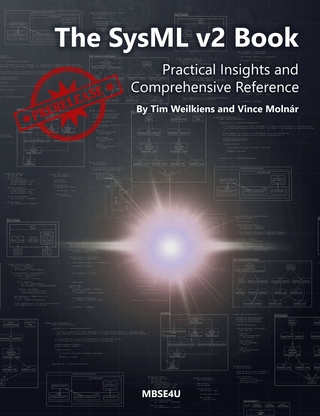

About
Individual Consultant and Associate Professor
I am an individual consultant and an associate professor at the Budapest University of Technology and Economics. My main research fields are model-based systems engineering and formal methods.
As an Independent Consultant, I offer training and consultation related to SysML v2 and MBSE to maximize the benefits and efficiency of rigorous system modeling at any level. I am among the main developers of the SysML v2 and KerML languages, and I have been teaching SysML v1 and MBSE, as well as formal methods for more than ten years. As the lead developer of the SysML v2 Conformance Test Suite, I am more than happy to help vendors develop a conformance implementation of the language.
As an Associate Professor, I have been teaching Model-Based Systems Engineering and Formal Methods for more than ten years. I greatly value talent care: I have supervised more than 30 BSc and MSc theses and more than 15 Scientific Students' Associations papers, and I am the supervisor of three exceptional PhD students. I am always open to collaboration in EU projects or industrial R&D.
As an Author, I am co-authoring The SysML v2 Book with Tim Weilkiens, the first comprehesive guide to SysML v2. I have also authored a series of blog posts about the language in Sensmetry's “Advent of SysML v2” event. I have also published more than 45 journal and conference papers about MBSE and formal methods, many of them at top-tier journals and conferences.
As a Community Leader, I am one of the key people in the OMG's Systems Modeling Community, where I lead the Formal Methods Working Group and the Conformance Working Group. I am also co-chair of the KerML 1.1 Revision Task Force with Ed Seidewitz.
The SysML v2 Book
Practical Insights and Comprehensive Reference
The pre-release of our book with Tim Weilkiens is available on Leanpub! The book is not yet complete. As a reader, you will receive all updates on Leanpub free of charge. The price of the pre-release is significantly lower than the final book price. As soon as the book is complete, it will receive an ISBN number and will also be available as a print version.
Get your copy today: https://leanpub.com/sysmlv2
Dive into the world of MBSE with "The SysML v2 Book: Practical Insights and Comprehensive Reference." Tailored for both novices and seasoned professionals in model-based systems engineering, this book serves as an indispensable guide to mastering the new generation of the System Modeling Language version 2 (SysML v2).
Embark on your journey with a clear introduction to the foundational concepts of SysML v2, providing a solid grounding for all readers, including those new to the field. The book also covers more complex subjects, offering a comprehensive exploration that encapsulates the full spectrum of SysML applications.
Examples are integrated throughout the text to illustrate practical applications, aiding in the understanding of how SysML v2 can be applied to various scenarios in systems engineering.

Services
As an individual consltant, I offer training and consultation. As an associate professor, I am happy to collaborate in EU or industrial R&D projects. Contact me if anything picks your attention from the list below.
SysML v2 Training (Any Level)
Want to be at the forefront of innovation? I offer customized training from quick-start guides to deep dives. As one of the developers of the language, I can provide unique insights about how to use the language for the best results.
SysML v1 Training (Any Level)
Playing safe and sticking for SysML v1 for the time being? My colleagues at the University and I can keep you going in the right direction with 10+ years of experience in training MBSE with SysML v1.
SysML v2 Consultation (for Practitioners)
Ready to get real with SysML v2? I can be your guide during the adoption process or help you find the best way to solve your problems.
SysML v2 Consultation (for Tool Vendors)
Want to make sure your product conforms to the specifications? As the leader of the Conformance Working Group, I got your back.
Research & Development Projects
The Critical Systems Research Group is always open to collaboration. Contact me if you want to write a proposal together, or if you need a partner in your consortium with experience in MBSE, formal methods, and AI.
Informal Collaboration
It doesn't have to be all formal. Although time is always a constraint, I am happy to brainstorm and innovate together with like-minded people. Drop a message if you think we should team up.
Resume
“Simplicity is the ultimate sophistication.” — Leonardo da Vinci
Summary
Vince Molnár
Innovative and passionate Researcher, Teacher, and Developer with 10+ years of experience in the research, design, and development of advanced tools that help engineers build the technology of the future.
Main Roles
Co-chair of the KerML 1.1 RTFLeader of the Formal Methods Working Group
Leader of the Conformance Working Group
Education
Doctor of Philosophy – PhD, Computer Science
2013–2015
Thesis
Booklet
Budapest University of Technology and Economics, Budapest, Hungary
Doctoral School of Informatics
Master of Science – MSc, Computer Science Engineer
2013–2015
Thesis
Budapest University of Technology and Economics, Budapest, Hungary
Dependable System Design Specialization
Bachelor of Science – BSc, Computer Engineering
2010–2014
Thesis (HU)
Budapest University of Technology and Economics, Budapest, Hungary
System Design Specialization
Professional Experience
Independent Consultant
2026–Present
Self-Employed
- SysML v2–related training and consultation
- Several industry partnerships
Associate Professor
2025–Present
Budapest University of Technology and Economics, Budapest, Hungary
- Education and research on formal methods and model-driven systems engineering
- Coordination of EU and industrial projects
- Supervision of internal tool development projects (Gamma and Theta)
Assistant Professor
2020–2025
Budapest University of Technology and Economics, Budapest, Hungary
Assistant Researcher
2018–2020
Budapest University of Technology and Economics, Budapest, Hungary
Assistant Research Fellow
2015–2020
Hungarian Academy of Sciences (Lendület Cyber-Physical Systems Research Group), Budapest, Hungary
Contact
Contact me for more details about my services or to discuss ways to collaborate.